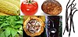

crop

Definition: A crop is a plant that can be grown and harvested extensively for profit or subsistence. When the plants of the same kind are cultivated at one place on a large scale, it is called a crop. Most crops are cultivated in agriculture or hydroponics. Crops may include macroscopic fungus (e.g. mushrooms) and marine macroalga (e.g. seaweed), some of which are grown in aquaculture.
Source: Wikipedia
Wikipedia Page
Wikidata Page